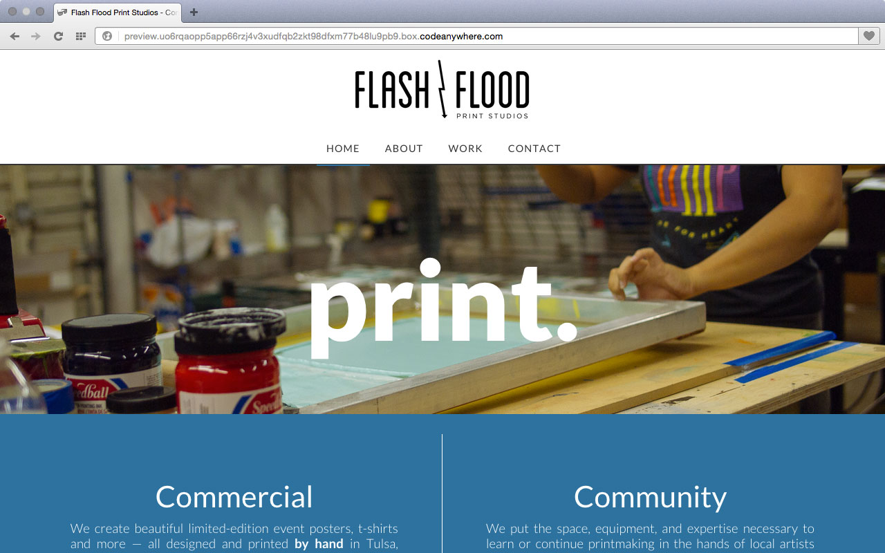

Also: Progressive, design-minded, restless, sometimes activist, filmmaker, photographer, writer, general creative-type. Wanderlusty, a lover of breakfast, a collector of many small things, of words, of experiences. A lover of friendship, of food, of here and there and of the journey between here and there. Avid and unapologetic Instagrammer. Love/hate relationship with social media and the internet. Daydreamy mountain man.
I've been designing for a decade. With clients ranging from individuals to Fortune 500 companies, I've created identities, user interfaces, websites, and marketing materials of all shapes and sizes. I live, breathe, and have strong opinions about design. Sometimes I write about them.
I've art directed a variety of projects, including large-scale collaborations and promotions for Verizon wireless, as well as a myriad of personal projects. I'm a strong creative mind who thinks big (and thinks better with a pencil in his hand).
I leverage a rather large set of creative skills to tell effective and robust stories. I have experience with photography, videography, audio recording and production, writing and research (and I'm currently working on my first documentary).
I also: code semantic HTML, CSS & JavaScript, have six+ years of WordPress experience, and can cook a perfect fried egg.
Transit Redesign - As long-time rider, I can say from experience: Tulsa's Transit design is an embarrassment. I've undertaken a redesign as a personal experiment in information design and cartography — and because I just love a beautiful map. I'm blogging about the process here.